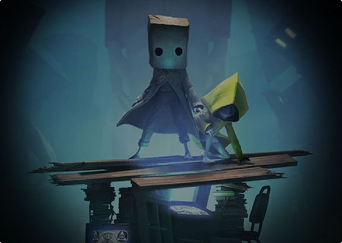

Little Nightmares II 첫 번째 패치 노트

- 모든 플랫폼:
- 글로벌
- 협동 멀리뛰기 순간에 Six가 호출에 응답하여 플레이어를 잡지 못하는 버그를 수정했습니다.
- 중국어 번체 및 간체 버전 트로피의 언어 문제를 수정했습니다.
- 특히 플레이어가 죽고 다시 생성될 때 일부 개체가 사라지는 버그를 수정했습니다.
- 황야
- 플레이어가 특정 순간에 체크포인트에서 다시 시작하면 캐빈 다락방에서 열쇠를 회수할 수 없는 버그를 수정했습니다.
- Cabin Attic 열쇠 퍼즐의 떠다니는 밧줄에 대한 시각적 수정.
- 뗏목을 타기 전 도구 창고 장면에서 Six의 발자국 애니메이션이 수정되었습니다.